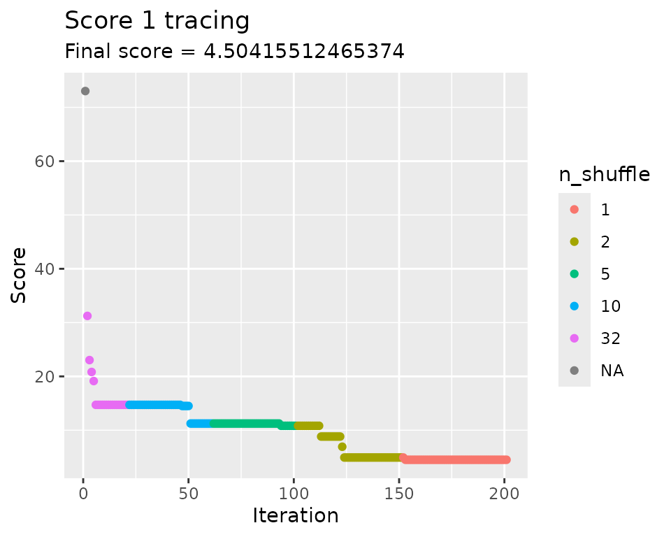
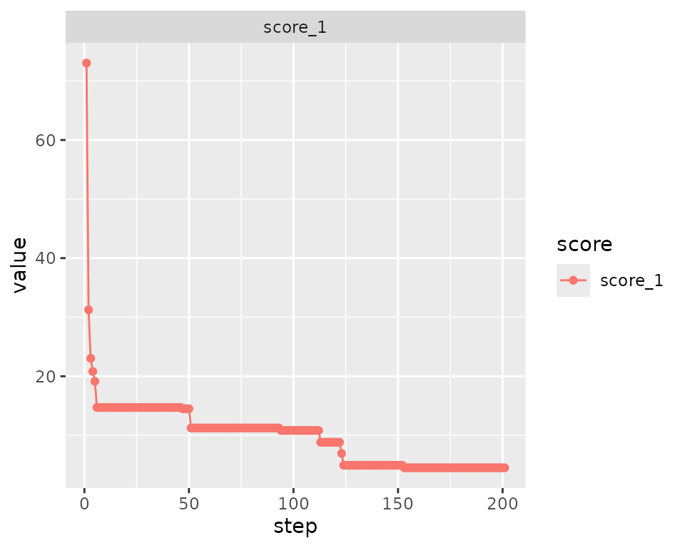
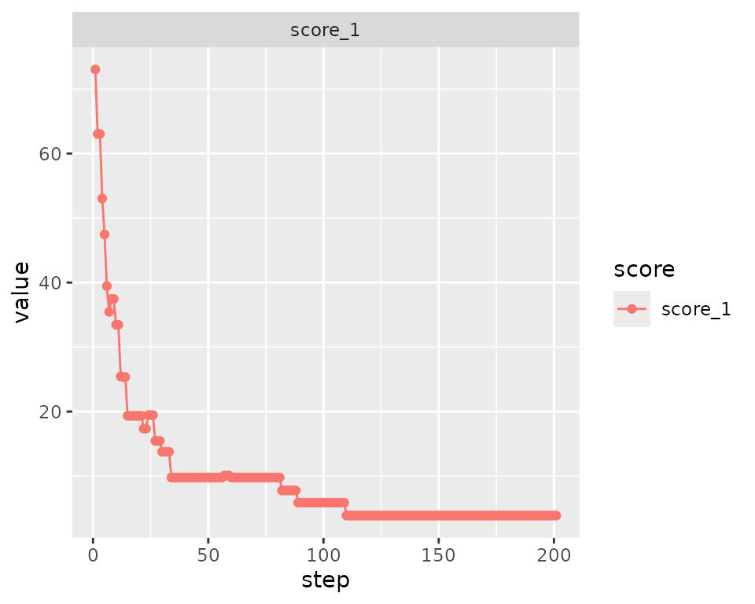
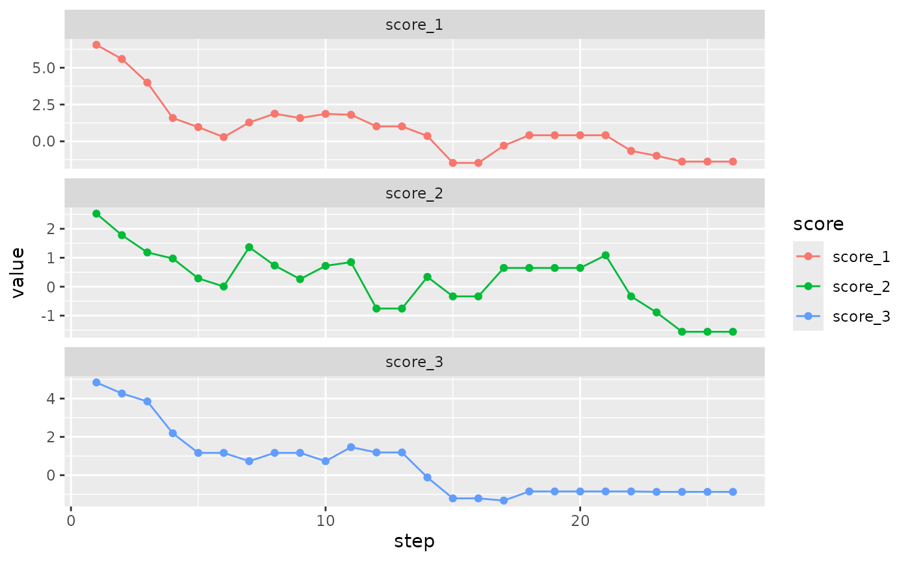
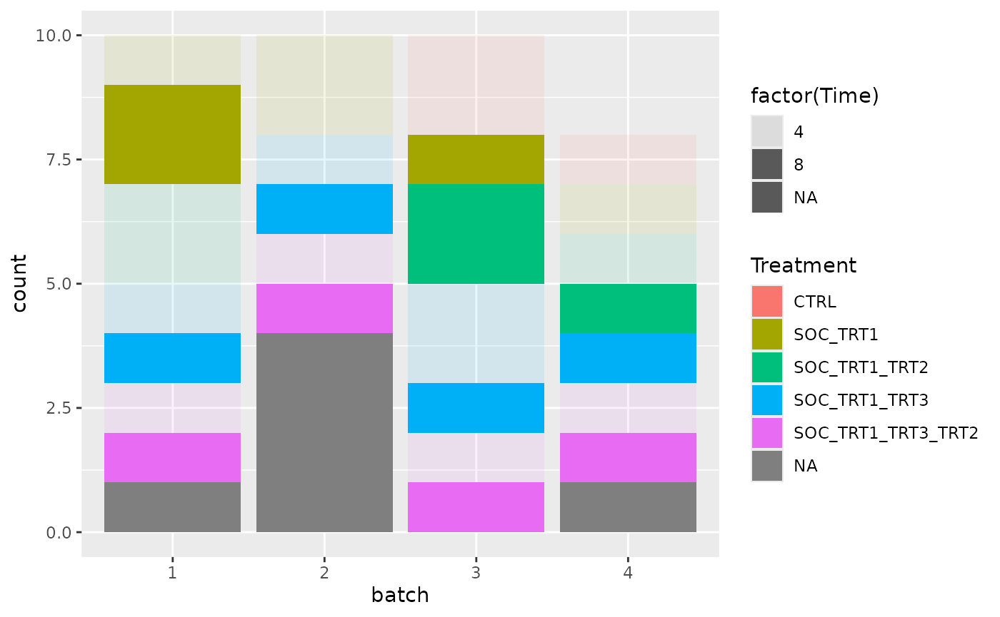

Sample annotation overview
data("multi_trt_day_samples")Samples are grouped by Treatment and Collection time with the following group sizes:
| Time | Treatment | n |
|---|---|---|
| 4 | CTRL | 3 |
| 4 | SOC_TRT1 | 4 |
| 4 | SOC_TRT1_TRT2 | 3 |
| 4 | SOC_TRT1_TRT3 | 4 |
| 4 | SOC_TRT1_TRT3_TRT2 | 4 |
| 8 | SOC_TRT1 | 3 |
| 8 | SOC_TRT1_TRT2 | 3 |
| 8 | SOC_TRT1_TRT3 | 4 |
| 8 | SOC_TRT1_TRT3_TRT2 | 4 |
Total number of samples is: 32
Task
Samples are to be blocked in batches for scRNA-seq.
- 8 samples can be processed per day (batch)
- Within day they need to be split into 2 parallel runs (4 + 4).
This data set is also used in the nested dimensions example. Here, we focus on using different methods for the optimization.
Setting up batch container
We allocate surplus positions in the batch container and some excluded positions to check that all optimization methods support empty container positions.
# Setting up the batch container
bc <- BatchContainer$new(
dimensions = c(
batch = ceiling(nrow(multi_trt_day_samples) / 8),
run = 2, position = 5
),
exclude = tibble::tibble(batch = 4, run = c(1, 2), position = c(5, 5))
) |>
# Add samples to container
assign_in_order(samples = multi_trt_day_samples)
bc
#> Batch container with 38 locations and 32 samples (assigned).
#> Dimensions: batch, run, positionFirst optimization with fixed shuffling protocol
The samples are distributed to 4 batches (processing days). We use
the osat scoring on sample Treatment and Time,
using first a shuffling protocol with a fixed number of sample swaps on
each iteration.
Note that doing 32 swaps on 38 free container positions does not make sense, since each swapping operation affects two different positions anyway. The upper limit is reduced to the max number of meaningful swaps (19) on the fly.
Optimization finishes after the list of permutations is exhausted.
n_shuffle <- rep(c(32, 10, 5, 2, 1), c(20, 40, 40, 50, 50))
scoring_f <- osat_score_generator(c("batch"), c("Treatment", "Time"))
bc1 <- optimize_design(
bc,
scoring = scoring_f,
n_shuffle = n_shuffle # will implicitly generate a shuffling function according to the provided schedule
)
#> Re-defined number of swaps to 19 in swapping function.
#> Warning in osat_score(bc, batch_vars = batch_vars, feature_vars = feature_vars,
#> : NAs in features / batch columns; they will be excluded from scoring
#> Checking variances of 1-dim. score vector.
#> ... (27.487) - OK
#> Initial score: 73.03
#> Achieved score: 31.241 at iteration 1
#> Achieved score: 23.03 at iteration 2
#> Achieved score: 20.82 at iteration 3
#> Achieved score: 19.136 at iteration 4
#> Achieved score: 14.715 at iteration 5
#> Achieved score: 14.504 at iteration 46
#> Achieved score: 11.241 at iteration 50
#> Achieved score: 10.82 at iteration 93
#> Achieved score: 8.82 at iteration 112
#> Achieved score: 6.925 at iteration 122
#> Achieved score: 4.925 at iteration 123
#> Achieved score: 4.504 at iteration 152
bc1$trace$elapsed
#> Time difference of 1.942075 secsOptimization trace
Custom plot with some colours:
bc1$scores_table() |>
dplyr::mutate(
n_shuffle = c(NA, n_shuffle)
) |>
ggplot2::ggplot(
ggplot2::aes(step, value, color = factor(n_shuffle))
) +
ggplot2::geom_point() +
ggplot2::labs(
title = "Score 1 tracing",
subtitle = stringr::str_glue("Final score = {bc1$score(scoring_f)}"),
x = "Iteration",
y = "Score",
color = "n_shuffle"
)
Using the internal method…
bc1$plot_trace()
We may safely apply the batch container methods get_samples() and score() also after using the new optimization code.
Final batch layout
bc1$score(scoring_f)
#> score_1
#> 4.504155
bc1$get_samples(assignment = TRUE) |>
dplyr::filter(!is.na(Treatment)) |>
dplyr::mutate(anno = stringr::str_c(Time, " hr")) |>
ggplot2::ggplot(ggplot2::aes(x = batch, y = interaction(position, run), fill = Treatment)) +
ggplot2::geom_tile(color = "white") +
ggplot2::geom_hline(yintercept = 5.5, size = 1) +
ggplot2::geom_text(ggplot2::aes(label = anno)) +
ggplot2::labs(x = "Batch", y = "Position . Run")
#> Warning: Using `size` aesthetic for lines was deprecated in ggplot2 3.4.0.
#> ℹ Please use `linewidth` instead.
#> This warning is displayed once every 8 hours.
#> Call `lifecycle::last_lifecycle_warnings()` to see where this warning was
#> generated.
Perform new iterations on optimized batch container
Further optimization (using a different shuffling protocol maybe) can be done immediately on the same batch container.
n_shuffle <- rep(c(5, 2, 1), c(30, 30, 30))
bc1 <- optimize_design(
bc1,
scoring = scoring_f,
n_shuffle = n_shuffle
)
#> Checking variances of 1-dim. score vector.
#> ... (32.036) - OK
#> Initial score: 4.504Optimization with specified stopping criteria
Starting optimization from scratch, we are passing now some stopping criteria that may terminate optimization before a shuffling protocol has been exhausted.
For demonstration, we use a shuffling function now that will do 3 sample (position) swaps per iteration and can be called an arbitrary number of times. Thus, iteration has to be stopped by either the max_iter criterion or by reaching a specific minimum delta threshold (score improvement from one selected solution to the next).
bc2 <- optimize_design(
bc,
scoring = scoring_f,
n_shuffle = 3, # will implicitly generate a shuffling function that will do 3 swaps at each iteration
max_iter = 2000,
min_delta = 0.1
)
#> Checking variances of 1-dim. score vector.
#> ... (26.111) - OK
#> Initial score: 73.03
#> Achieved score: 49.03 at iteration 1
#> Achieved score: 47.452 at iteration 2
#> Achieved score: 33.452 at iteration 3
#> Achieved score: 27.452 at iteration 5
#> Achieved score: 23.452 at iteration 6
#> Achieved score: 21.452 at iteration 9
#> Achieved score: 19.452 at iteration 12
#> Achieved score: 15.767 at iteration 13
#> Achieved score: 13.767 at iteration 14
#> Achieved score: 10.188 at iteration 17
#> Achieved score: 8.504 at iteration 36
#> Achieved score: 6.504 at iteration 55
#> Achieved score: 4.504 at iteration 72
#> Achieved score: 4.188 at iteration 285
#> Achieved score: 2.609 at iteration 452
#> Achieved score: 2.294 at iteration 555Optimization with multi-variate scoring function
Instead of passing a single scoring function, a list of multiple scoring functions can be passed to the optimizer, each of which to return a scalar value on evaluation.
By default, a strict improvement rule is applied for classifying a potential solution as “better”: each of the individual scores has to be smaller than or equal to its previous value, and one of the scores has to be changed.
However, the user could specify other methods for aggregating the scores or defining the acceptance criterion. See later examples.
The second scoring function used here is by the way rather redundant and just serves for illustration.
multi_scoring_f <- list(
osat_score_generator(c("batch"), c("Treatment", "Time")),
osat_score_generator(c("batch"), c("Treatment"))
)
bc3 <- optimize_design(
bc,
scoring = multi_scoring_f,
n_shuffle = 3,
max_iter = 200,
min_delta = 0.1
)
#> Warning in osat_score(bc, batch_vars = batch_vars, feature_vars = feature_vars,
#> : NAs in features / batch columns; they will be excluded from scoring
#> Warning in osat_score(bc, batch_vars = batch_vars, feature_vars = feature_vars,
#> : NAs in features / batch columns; they will be excluded from scoring
#> Checking variances of 2-dim. score vector.
#> ... (23.682, 74.386) - OK
#> Initial score: c(73.03, 44.803)
#> Achieved score: c(52.925, 32.593) at iteration 1
#> Achieved score: c(48.925, 28.593) at iteration 2
#> Achieved score: c(47.241, 26.909) at iteration 3
#> Achieved score: c(33.662, 23.751) at iteration 6
#> Achieved score: c(27.873, 18.382) at iteration 12
#> Achieved score: c(23.873, 12.277) at iteration 13
#> Achieved score: c(19.767, 12.172) at iteration 19
#> Achieved score: c(15.767, 6.277) at iteration 27
#> Achieved score: c(12.083, 4.909) at iteration 28
#> Achieved score: c(12.083, 4.803) at iteration 38
#> Achieved score: c(10.188, 3.014) at iteration 70
#> Achieved score: c(6.188, 3.014) at iteration 98Note that the first score tends to yield higher values than the second one. This could be a problem when trying to select a solution based on an aggregated, overall score. We repeat the same optimization now by using the autoscaling functionality of the optimizer.
Auto-scaling scores
We’re just adding the autoscale_scores option here to
estimate the distribution of individual scores on a number of completely
random sample assignments (200 in this case) and then apply a
transformation to rescale each score to a standard normal.
Note that by ‘normalizing’ the distribution of the scores we obtain values centered around zero, thus that the optimized scores are likely to be negative. We may also want to decrease the delta_min parameter to match the new numerical range.
bc3_as <- optimize_design(
bc,
scoring = multi_scoring_f,
n_shuffle = 3,
max_iter = 200,
min_delta = 0.01,
autoscale_scores = T,
autoscaling_permutations = 200
)
#> Checking variances of 2-dim. score vector.
#> ... (30.562, 49.662) - OK
#> Creating autoscaling function for 2-dim. score vector. (200 random permutations)
#> ... Performing boxcox lambda estimation.
#> Initial score: c(7.649, 2.966)
#> Achieved score: c(6.375, 1.98) at iteration 1
#> Achieved score: c(4.726, 1.3) at iteration 2
#> Achieved score: c(4.15, 0.809) at iteration 3
#> Achieved score: c(1.288, 0.809) at iteration 4
#> Achieved score: c(0.705, 0.477) at iteration 5
#> Achieved score: c(-0.425, 0.228) at iteration 11
#> Achieved score: c(-0.858, 0.153) at iteration 15
#> Achieved score: c(-1.288, -1.165) at iteration 18
#> Achieved score: c(-1.738, -2.018) at iteration 20
#> Achieved score: c(-2.188, -2.537) at iteration 31
#> Achieved score: c(-2.266, -2.627) at iteration 111
#> Achieved score: c(-2.777, -2.627) at iteration 120
#> Achieved score: c(-4.487, -2.986) at iteration 154Having directly comparable scores, it may be reasonable now to use a function that somehow aggregates the scores to decide on the best iteration (instead of looking at the scores individually).
An easy way to do this is to use the built-in worst_score function. This will simply set the aggregated score to whichever of the individual scores is larger (i.e. ‘worse’ in terms of the optimization).
bc4 <- optimize_design(
bc,
scoring = multi_scoring_f,
n_shuffle = 3,
aggregate_scores_func = worst_score,
max_iter = 200,
autoscale_scores = TRUE,
autoscaling_permutations = 200
)
#> Checking variances of 2-dim. score vector.
#> ... (24.997, 53.505) - OK
#> Creating autoscaling function for 2-dim. score vector. (200 random permutations)
#> ... Performing boxcox lambda estimation.
#> Initial score: c(5.75, 2.625)
#> Aggregated: 5.75
#> Achieved score: c(4.636, 1.84) at iteration 1
#> Aggregated: 4.636
#> Achieved score: c(2.406, 0.661) at iteration 2
#> Aggregated: 2.406
#> Achieved score: c(2.142, 0.597) at iteration 3
#> Aggregated: 2.142
#> Achieved score: c(1.609, 0.073) at iteration 4
#> Aggregated: 1.609
#> Achieved score: c(0.377, -1.251) at iteration 6
#> Aggregated: 0.377
#> Achieved score: c(-0.376, -0.911) at iteration 8
#> Aggregated: -0.376
#> Achieved score: c(-0.785, -1.294) at iteration 15
#> Aggregated: -0.785
#> Achieved score: c(-1.609, -1.537) at iteration 20
#> Aggregated: -1.537
#> Achieved score: c(-2.767, -1.607) at iteration 34
#> Aggregated: -1.607
#> Achieved score: c(-2.734, -2.032) at iteration 45
#> Aggregated: -2.032
#> Achieved score: c(-2.734, -2.59) at iteration 54
#> Aggregated: -2.59
#> Achieved score: c(-2.734, -3.286) at iteration 128
#> Aggregated: -2.734
#> Achieved score: c(-3.268, -2.971) at iteration 129
#> Aggregated: -2.971
#> Achieved score: c(-4.06, -3.796) at iteration 160
#> Aggregated: -3.796
#> Achieved score: c(-4.821, -4.451) at iteration 174
#> Aggregated: -4.451Another - more interesting - option would be to aggregate the two scores by taking their sum. This way both scores will influence the optimization at every step.
For illustration, we omit the n_shuffle parameter here,
which will lead by default to pairwise sample swaps being done on each
iteration.
bc5 <- optimize_design(
bc,
scoring = multi_scoring_f,
aggregate_scores_func = sum_scores,
max_iter = 200,
autoscale_scores = TRUE,
autoscaling_permutations = 200
)As a final example, we calculate the (squared) L2 norm to actually aggregate the two scores. Not that this choice is not really motivated in this case, but it could be used if optimization was carried on meaningful distance vectors or normalized n-tuples.
Note that we don’t use the auto-scaling in this case as the L2-norm based optimization would force both normalized scores towards zero, not the minimal (negative) value that would be desired in that case.
bc5_2 <- optimize_design(
bc,
scoring = multi_scoring_f,
aggregate_scores_func = L2s_norm,
max_iter = 200,
)Passing a customized shuffling function
It is recommended to use the n_shuffle parameter to
steer the optimization protocol. However, you may also provide a
dedicated shuffling function that on each call has to return a shuffling
order (as integer vector) or a list with the source and destination
positions (src and dst) of the sample positions to be swapped.
The following example uses a template for creating complete random shuffles across all available positions in the batch container. Note that this is usually not a good strategy for converging to a solution.
bc6 <- optimize_design(
bc,
scoring = scoring_f,
shuffle_proposal_func = complete_random_shuffling,
max_iter = 200
)
#> Checking variances of 1-dim. score vector.
#> ... (29.936) - OK
#> Initial score: 73.03
#> Achieved score: 19.241 at iteration 1
#> Achieved score: 19.03 at iteration 2
#> Achieved score: 18.82 at iteration 6
#> Achieved score: 16.82 at iteration 9
#> Achieved score: 10.925 at iteration 16
#> Achieved score: 10.82 at iteration 50
#> Achieved score: 10.504 at iteration 185Using simulated annealing (SA) for optimization
Esp. for very large search spaces, better solutions can be quite successfully obtained by a SA protocol which allows the optimizer to jump over ‘energy barriers’ to more likely converge at lower local minima.
The optimizer usually remembers the permutation with the best overall score to start with, but this behavior can be changed by supplying a simulated annealing protocol, most simply by generating a ready-made function template.
It is generally recommended for SA to make small changes at each step, like allowing just 1 sample swap per iteration.
Currently the simulated annealing protocol requires a single double value score to be optimized. Choose an appropriate aggregation function if you happen to have multiple scores initially.
bc7 <- optimize_design(
bc,
scoring = scoring_f,
n_shuffle = 1,
acceptance_func = mk_simanneal_acceptance_func(),
max_iter = 200
)
#> Checking variances of 1-dim. score vector.
#> ... (29.707) - OK
#> Initial score: 73.03
#> Achieved score: 63.03 at iteration 1
#> Achieved score: 63.03 at iteration 2
#> Achieved score: 53.03 at iteration 3
#> Achieved score: 47.452 at iteration 4
#> Achieved score: 39.452 at iteration 5
#> Achieved score: 35.452 at iteration 6
#> Achieved score: 37.452 at iteration 7
#> Achieved score: 37.452 at iteration 8
#> Achieved score: 33.452 at iteration 9
#> Achieved score: 33.452 at iteration 10
#> Achieved score: 25.452 at iteration 11
#> Achieved score: 25.346 at iteration 12
#> Achieved score: 25.346 at iteration 13
#> Achieved score: 19.346 at iteration 14
#> Achieved score: 19.346 at iteration 15
#> Achieved score: 19.346 at iteration 17
#> Achieved score: 19.346 at iteration 18
#> Achieved score: 19.346 at iteration 19
#> Achieved score: 19.346 at iteration 20
#> Achieved score: 17.346 at iteration 21
#> Achieved score: 17.346 at iteration 22
#> Achieved score: 19.452 at iteration 23
#> Achieved score: 19.452 at iteration 24
#> Achieved score: 19.452 at iteration 25
#> Achieved score: 15.452 at iteration 26
#> Achieved score: 15.452 at iteration 28
#> Achieved score: 13.767 at iteration 29
#> Achieved score: 13.767 at iteration 30
#> Achieved score: 13.767 at iteration 31
#> Achieved score: 9.767 at iteration 33
#> Achieved score: 9.767 at iteration 35
#> Achieved score: 9.767 at iteration 44
#> Achieved score: 9.767 at iteration 49
#> Achieved score: 10.083 at iteration 56
#> Achieved score: 10.083 at iteration 57
#> Achieved score: 9.767 at iteration 59
#> Achieved score: 9.767 at iteration 63
#> Achieved score: 9.767 at iteration 74
#> Achieved score: 9.767 at iteration 77
#> Achieved score: 9.767 at iteration 78
#> Achieved score: 9.767 at iteration 79
#> Achieved score: 7.767 at iteration 81
#> Achieved score: 5.873 at iteration 88
#> Achieved score: 3.873 at iteration 109The trace may show a non strictly monotonic behavior now, reflecting the SA protocol at work.
bc7$plot_trace()
Better results and quicker convergence may be achieved by playing with the starting temperature (T0) and cooling speed (alpha) in a specific case.
bc8 <- optimize_design(
bc,
scoring = scoring_f,
n_shuffle = 1,
acceptance_func = mk_simanneal_acceptance_func(mk_simanneal_temp_func(T0 = 100, alpha = 2)),
max_iter = 150
)
#> Checking variances of 1-dim. score vector.
#> ... (33.289) - OK
#> Initial score: 73.03
#> Achieved score: 65.03 at iteration 1
#> Achieved score: 59.452 at iteration 2
#> Achieved score: 53.873 at iteration 3
#> Achieved score: 53.873 at iteration 4
#> Achieved score: 43.873 at iteration 5
#> Achieved score: 39.873 at iteration 6
#> Achieved score: 31.873 at iteration 7
#> Achieved score: 31.873 at iteration 9
#> Achieved score: 31.873 at iteration 12
#> Achieved score: 29.873 at iteration 16
#> Achieved score: 29.873 at iteration 17
#> Achieved score: 29.873 at iteration 22
#> Achieved score: 27.873 at iteration 24
#> Achieved score: 26.294 at iteration 27
#> Achieved score: 20.294 at iteration 28
#> Achieved score: 16.294 at iteration 29
#> Achieved score: 14.294 at iteration 30
#> Achieved score: 12.294 at iteration 34
#> Achieved score: 10.294 at iteration 36
#> Achieved score: 10.188 at iteration 38
#> Achieved score: 8.188 at iteration 46
#> Achieved score: 6.504 at iteration 49
#> Achieved score: 4.504 at iteration 115
bc8$plot_trace()
Full blown example
The following example puts together all possible options to illustrate the flexibility of the optimization.
n_shuffle <- rep(c(3, 2, 1), c(20, 20, 200))
bc9 <- optimize_design(
bc,
scoring = list(
osat_score_generator(c("batch"), c("Treatment", "Time")),
osat_score_generator(c("batch"), c("Treatment")),
osat_score_generator(c("batch"), c("Time"))
),
n_shuffle = n_shuffle,
aggregate_scores_func = sum_scores,
acceptance_func = mk_simanneal_acceptance_func(mk_simanneal_temp_func(T0 = 500, alpha = 1)),
max_iter = 200,
min_delta = 1e-8,
autoscale_scores = T
)
#> Warning in osat_score(bc, batch_vars = batch_vars, feature_vars = feature_vars,
#> : NAs in features / batch columns; they will be excluded from scoring
#> Warning in osat_score(bc, batch_vars = batch_vars, feature_vars = feature_vars,
#> : NAs in features / batch columns; they will be excluded from scoring
#> Warning in osat_score(bc, batch_vars = batch_vars, feature_vars = feature_vars,
#> : NAs in features / batch columns; they will be excluded from scoring
#> Checking variances of 3-dim. score vector.
#> ... (32.823, 66.778, 79.505) - OK
#> Creating autoscaling function for 3-dim. score vector. (100 random permutations)
#> ... Performing boxcox lambda estimation.
#> Initial score: c(6.556, 2.524, 4.84)
#> Aggregated: 13.92
#> Achieved score: c(5.593, 1.78, 4.266) at iteration 1
#> Aggregated: 11.639
#> Achieved score: c(3.988, 1.184, 3.852) at iteration 2
#> Aggregated: 9.024
#> Achieved score: c(1.584, 0.973, 2.187) at iteration 3
#> Aggregated: 4.744
#> Achieved score: c(0.967, 0.286, 1.165) at iteration 4
#> Aggregated: 2.419
#> Achieved score: c(0.288, 0.007, 1.165) at iteration 5
#> Aggregated: 1.461
#> Achieved score: c(1.28, 1.365, 0.733) at iteration 6
#> Aggregated: 3.378
#> Achieved score: c(1.878, 0.731, 1.165) at iteration 7
#> Aggregated: 3.775
#> Achieved score: c(1.584, 0.261, 1.165) at iteration 8
#> Aggregated: 3.01
#> Achieved score: c(1.863, 0.719, 0.733) at iteration 9
#> Aggregated: 3.315
#> Achieved score: c(1.802, 0.848, 1.465) at iteration 10
#> Aggregated: 4.114
#> Achieved score: c(1.017, -0.756, 1.188) at iteration 11
#> Aggregated: 1.449
#> Achieved score: c(0.36, 0.338, -0.117) at iteration 13
#> Aggregated: 0.582
#> Achieved score: c(-1.466, -0.335, -1.209) at iteration 14
#> Aggregated: -3.011
#> Achieved score: c(-0.292, 0.648, -1.323) at iteration 16
#> Aggregated: -0.968
#> Achieved score: c(0.414, 0.648, -0.848) at iteration 17
#> Aggregated: 0.214
#> Achieved score: c(0.414, 1.085, -0.848) at iteration 20
#> Aggregated: 0.652
#> Achieved score: c(-0.649, -0.335, -0.848) at iteration 21
#> Aggregated: -1.832
#> Achieved score: c(-0.982, -0.889, -0.869) at iteration 22
#> Aggregated: -2.741
#> Achieved score: c(-1.376, -1.557, -0.869) at iteration 23
#> Aggregated: -3.802
#> Achieved score: c(-1.376, -1.557, -0.869) at iteration 25
#> Aggregated: -3.802
#> Reached min delta in 25 iterations.
bc9$plot_trace()
bc9$get_samples(assignment = TRUE) |>
dplyr::mutate(batch = factor(batch)) |>
ggplot2::ggplot(ggplot2::aes(x = batch, fill = Treatment, alpha = factor(Time))) +
ggplot2::geom_bar()
#> Warning: Using alpha for a discrete variable is not advised.